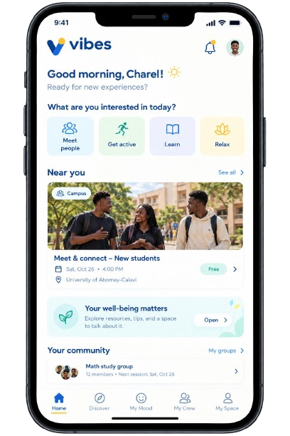
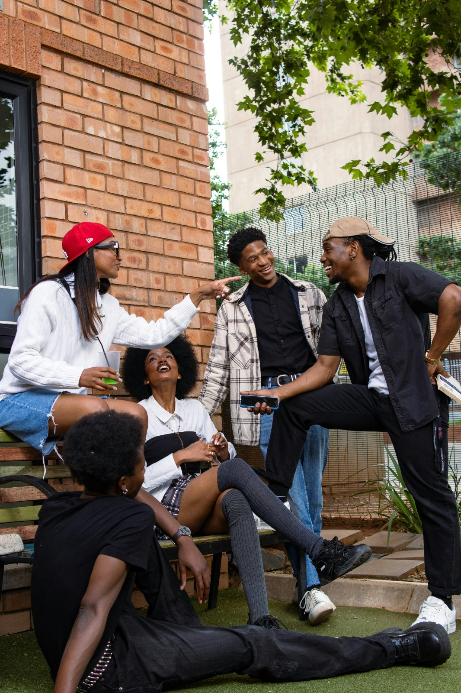
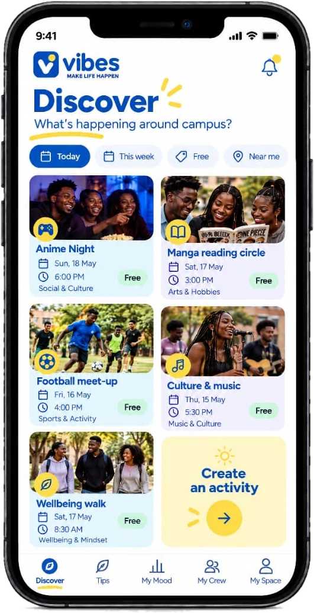
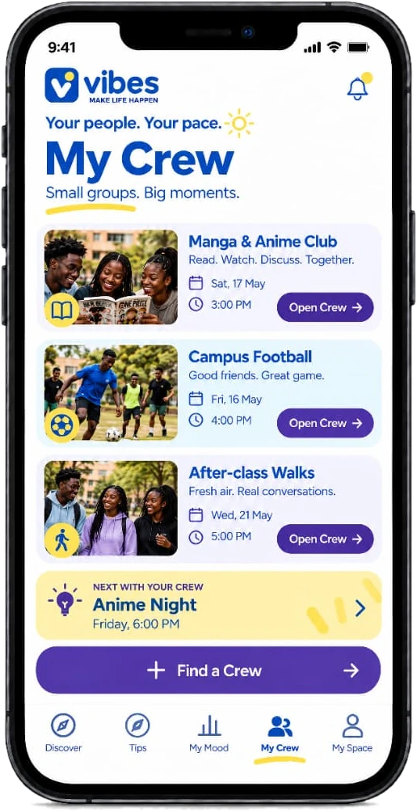
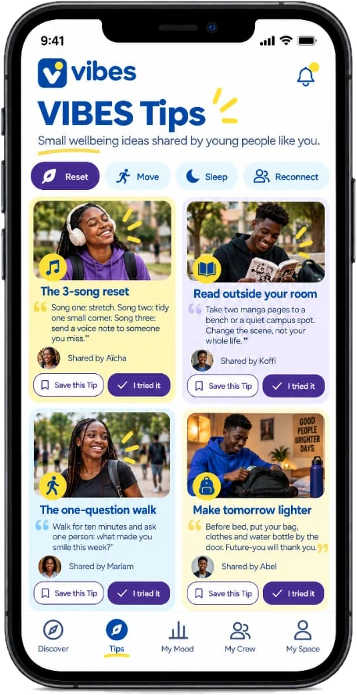
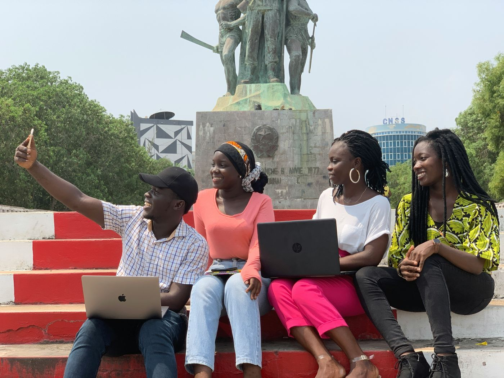
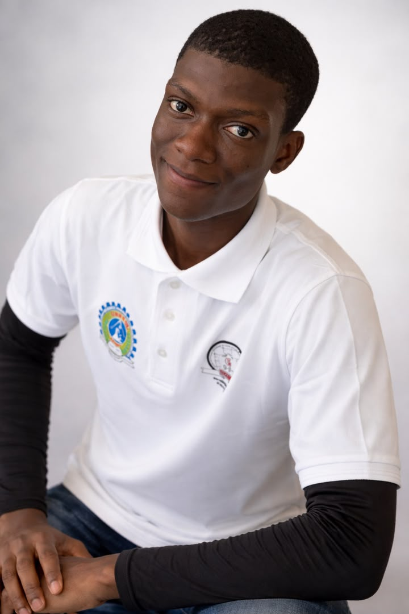

Respect de la vie privée
Ce que tu partages dans ton espace personnel reste privé selon les règles prévues par VIBES.
Et si ton téléphone t'aidait à vivre davantage, plutôt qu'à rester connecté toute la journée ?
Une application pensée par des jeunes, pour des jeunes : retrouver des jeunes qui partagent tes passions, prendre soin de toi et construire des habitudes qui te font du bien.
En cours de conception : l'application n'est pas encore disponible au téléchargement. Envie de donner un coup de main ? Contribuer


Le constat
Entre les cours, les écrans et les journées qui se ressemblent, il n'est pas toujours facile de rencontrer de nouvelles personnes, de trouver des activités qui nous correspondent ou de prendre du temps pour soi.
C'est de cette idée qu'est né VIBES.

Pourquoi VIBES existe
Ce n'est pas un manque de volonté. C'est ce que nous observons autour de nous, sur le campus.
Le scroll est conçu pour retenir. Y rester ne dit rien de ta volonté.
Quand on pose le téléphone, on ne sait pas toujours quoi faire d'aussi bien, ni avec qui.
On sait souvent de quoi on a besoin. Il manque un endroit pour se l'avouer sans être jugé.
Des outils de bien-être existent, mais beaucoup d'étudiants ne les connaissent pas, ou ne s'y reconnaissent pas.
Premier questionnaire (10 étudiants, 4 écoles) : 5 sur 10 trouvent leur temps d'écran trop long, 4 sur 10 disent ne pas avoir avec qui sortir. L'échantillon est trop petit pour conclure : c'est un premier signal.
L'approche
Retrouve des jeunes qui partagent tes passions. Explore les activités, découvre les clubs et trouve des occasions de faire le premier pas.

Prends un moment pour toi, mets des mots sur ton humeur et découvre des conseils simples pour mieux prendre soin de toi.

Transforme les petites intentions en habitudes. Essaie de nouvelles activités, relève de petites Étincelles et avance à ton rythme.
Cinq dimensions du bien-être : le lien social · le bien-être physique · l'équilibre émotionnel · le bien-être mental · l'alimentation.
Pas besoin de tout changer. Parfois, une petite action suffit pour commencer.
L'expérience
De la découverte d'une activité au petit moment que l'on s'accorde pour soi, VIBES veut rendre les premiers pas plus simples.

Filtre par jour, gratuité ou distance.

Les infos pratiques d'abord : lieu public, gratuit, tous niveaux.

Un petit groupe autour d'une activité, pour ne pas venir seul·e.

Mon Mood : facultatif, privé, sans score ni diagnostic.

Des conseils courts écrits par des jeunes ; le contenu santé sera relu.
Ces maquettes ont été générées avec des outils d'IA, faute de designer pour l'instant. Elles sont en anglais, sujettes à modification, et montrent la direction : l'application sera d'abord en français.
La technologie ouvre la porte. Les expériences se vivent dehors.
Ce qui nous distingue
Beaucoup d'applications se mesurent au temps qu'on y passe. VIBES se mesure à celui qu'on y passe en moins.
Notre indicateur central : les heures vécues. Ce sont les heures réelles de match, de marche, de répétition de chorale ou de création que VIBES a aidé à déclencher.
Le temps passé dans l'application est suivi comme un signal d'alerte, pas comme un objectif.
Indicateur en cours de définition. Aucun résultat n'est avancé à ce stade.
Le Crew
Un match, une marche, une séance de musique ou une nouvelle activité : parfois, il suffit de trouver quelques personnes avec qui partager le moment.
Prévu : un chat réservé aux inscrits de l'activité, sans messages privés. Le Crew sert à participer, pas à remplacer la vraie vie.

Nos engagements
Ce que tu partages dans ton espace personnel reste privé selon les règles prévues par VIBES.
Tu choisis les activités auxquelles tu souhaites participer et ce que tu veux partager.
Pas de compétition sur ton bien-être, pas de culpabilisation lorsque tu prends une pause.
Les événements seront soumis à une validation et les organisateurs devront respecter les règles de sécurité prévues par le projet.
Quand l'isolement s'installe, trouver une vraie écoute devient plus difficile (harcèlement, santé). Un accès « Besoin d'aide ? » est prévu sur les écrans, vers des contacts de confiance et des lignes d'aide gratuites, dont la liste est en cours de vérification.
VIBES est une initiative de prévention et de bien-être. Ce n'est ni un service de soins, ni un outil de diagnostic, ni un conseil médical ou psychologique.
Peu de données mobiles, un budget serré, des trajets parfois longs : on y pense dès la conception. Prévu dans la conception
Une application web, pensée pour les petits forfaits de données et les téléphones plus anciens.
Le coût réel, la distance et la durée affichés avant de s'engager.
Des activités gratuites mises en avant, pour que le budget ne bloque pas l'envie.
Le français d'abord, des conseils écrits par des jeunes béninois. Les langues locales sont à l'étude.
Des activités ouvertes à tous les niveaux, avec des informations d'accessibilité.
En toute transparence
VIBES est un projet étudiant en construction. Voici ce qui existe, ce qui avance et ce qui est envisagé.
Enquête auprès de 30 étudiants ou plus, tests des maquettes.
Premier MVP web avec 20 à 30 testeurs sur le campus.
Enquêtes élargies, ambassadeurs, relecture santé.
4 à 6 semaines supervisées, en période de cours.
Un rapport d'apprentissage ouvert.
Dates indicatives. Les étapes dépendant d'un financement démarrent à l'arrivée des fonds.
L'équipe
Un projet étudiant, par des jeunes, pour des jeunes, porté par trois personnes de l'UNSTIM, au Bénin.
ML Engineer en formation & Développeuse Front-end
UNSTIM · Abomey, Bénin

System Thinker & Data Scientist
UNSTIM · Abomey, Bénin

Business Development & Product Marketing Manager
UNSTIM · Abomey, Bénin
Contribuer
Le projet est en cours de conception, et c'est maintenant que ton avis compte le plus. Choisis ce qui te ressemble.
Rejoins des jeunes pour rédiger des conseils courts, dans nos mots et avec notre culture.
Je me propose , écrire des Tips (s'ouvre dans un nouvel onglet)Entretiens, essais de maquettes, premières activités sur ton campus : dis-nous ce qui te parle et ce qui ne te parle pas.
Je me propose , tester et donner mon avis (s'ouvre dans un nouvel onglet)Match, karaoké, marche, atelier : fais-toi connaître comme organisateur, organisatrice, association ou lieu. Chaque événement sera validé avant publication.
Je me propose , proposer une activité ou un club (s'ouvre dans un nouvel onglet)Étudiant·e en fin de formation de santé ou professionnel·le : aide-nous à vérifier les conseils avant leur publication.
Je me propose , relire les contenus santé (s'ouvre dans un nouvel onglet)Les messages passent par GitHub et sont publics : n'y mets ni numéro de téléphone ni adresse e-mail. Pour écrire en privé : prosperaffoukou@outlook.com.
Questions fréquentes
Pas encore. Le projet est en cours de conception : les maquettes existent, mais l'application n'est pas encore téléchargeable.
Non. C'est une initiative de prévention et de bien-être. VIBES ne pose pas de diagnostic, ne donne pas de score, et t'oriente vers une personne ou un service fiable si cela te dépasse.
Ce que tu écris dans My Safe Place est privé, selon les règles prévues par VIBES. Les réponses sur ton ressenti sont facultatives.
Non. Pas de fil public, pas de likes, pas de classements. Les activités sont publiques et se vivent en petits groupes.